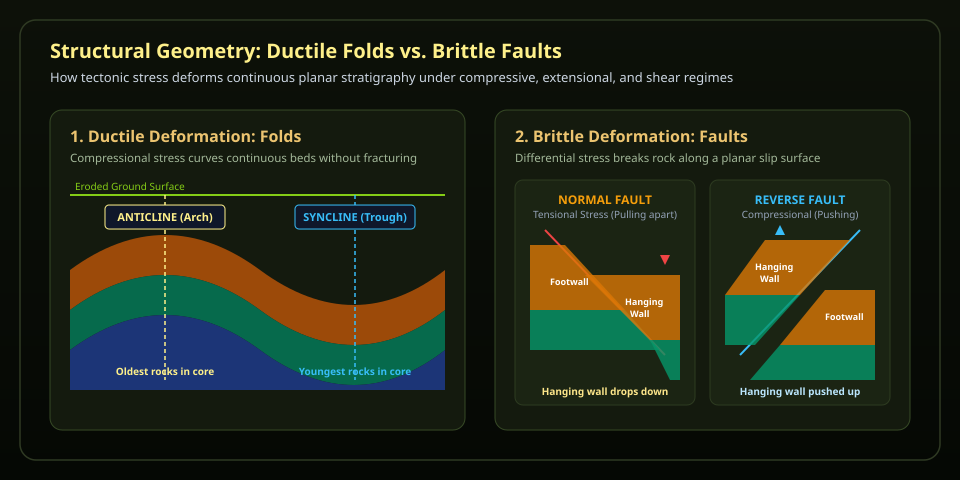
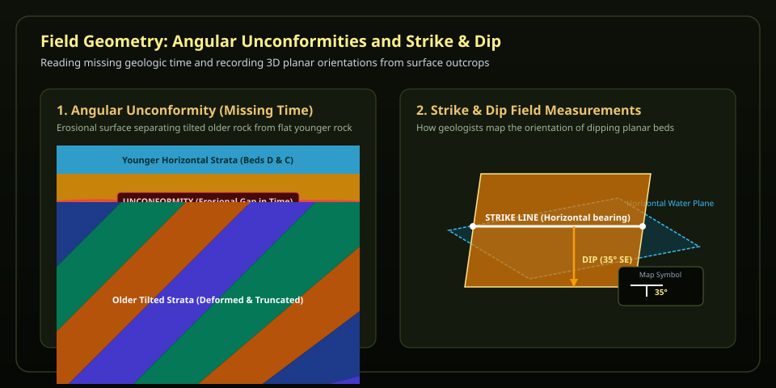

Geologists rarely see an entire underground formation directly. Instead, they gather scattered borehole core intercepts, seismic reflections, and surface outcrop dip measurements, and use implicit potential-field interpolation (the foundation of modern structural modeling platforms like GemPy and Leapfrog) to reconstruct full 3D stratigraphy.
Drill an exploratory borehole to test subsurface continuity.
Choose "Place a borehole", then click the top surface of the model.
How Crustal Deformation Works: Steno's Laws to 3D Tectonics
Sedimentary rocks originate as flat, continuous sheets on ocean and lake basins according to Nicolas Steno's foundational geological principles: Original Horizontality (gravity settles sediments horizontally), Superposition (younger strata accumulate over older strata), and Lateral Continuity (layers extend laterally until they pinch out or hit a basin barrier). When we encounter folded, broken, or tilted beds in modern mountain belts, we know tectonic stress transformed them after lithification.
1. Folds & Faults: Ductile vs. Brittle Deformation
Whether rock fractures or bends depends on temperature, confining pressure, and deformation rate. Deep in Earth's crust, high confining pressures and temperatures allow rocks to deform plastically into ductile folds (upward-arching anticlines with older rocks at their core, and downward-troughing synclines with youngest rocks at their core). Near the cooler surface, rocks undergo brittle deformation, breaking along slip planes into faults.

Figure 1 · Folds and Faults — Compressional tectonic stress bows sedimentary layers into anticlines and synclines. When crust is pulled apart by extensional stress, normal faults drop the hanging wall downward relative to the footwall; during crustal compression, reverse/thrust faults push the hanging wall upward.
2. Unconformities & Field Strike and Dip
When crust is uplifted above sea level, erosion carves away millions of years of rock record before subsequent subsidence allows new horizontal layers to deposit over the tilted, truncated surface. This boundary is called an angular unconformity. In the field, geologists measure the 3D orientation of planar contacts using two numbers: strike (the compass heading of a level horizontal line along the plane) and dip (the maximum angle the plane slopes downward into the earth).

Figure 2 · Angular Unconformities and Strike & Dip — An angular unconformity represents an enormous gap in geologic time where older deformed rocks were eroded flat prior to renewed deposition. Geologists document these formations using standard strike-and-dip map symbols that show direction and steepness of layer tilt.
Model-Reading Field Routine
Verify the Control Points: Identify the measured control points (yellow spheres) before accepting the interpolated colored surfaces.
Analyze Cross Sections: Slide the cross-section plane to reveal the interior geometry and evaluate where layer thicknesses stay uniform versus where they pinch or offset.
Locate Interpolation Uncertainty: Notice how uncertainty grows in regions where no boreholes or surface contact measurements exist.
Exploratory Drilling Strategy
In structural geology and mineral exploration, every borehole is expensive. To test a structural hypothesis (such as proving whether an anticlinal crest exists or pinpointing fault throw), geologists do not drill randomly; they place boreholes where model variance is highest or where layer contacts are predicted to shift abruptly.
Fold Crest Test: Drilling through an anticlinal hinge tests whether the fold is symmetric or overturned.
Fault Boundary Test: Drilling across a predicted fault plane proves whether a repeating stratigraphic sequence (reverse fault) or missing section (normal fault) exists.
Defend a Geological Model (Claim, Evidence, Reasoning)
Select a structural claim, cite specific observable features from the 3D model, and explain how the geometric evidence supports your interpretation. Make sure to distinguish directly measured control points from mathematical interpolation.